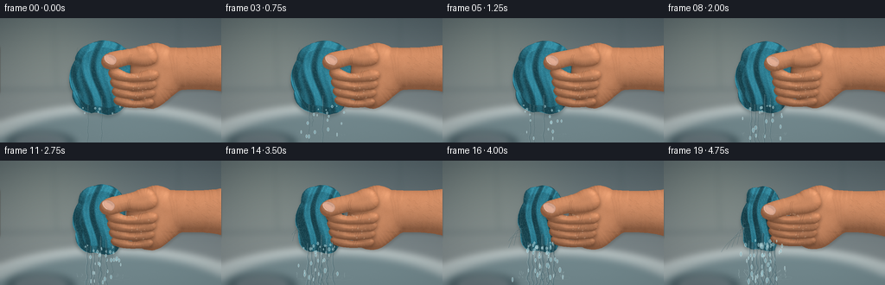
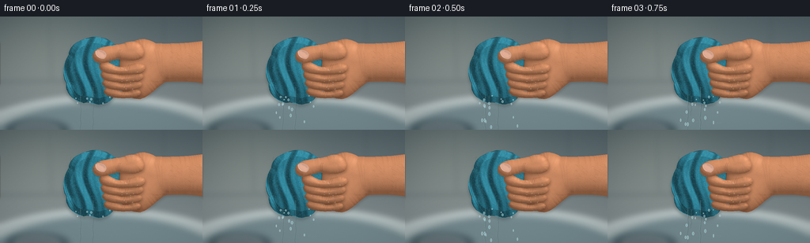
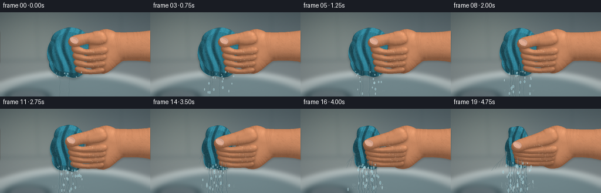
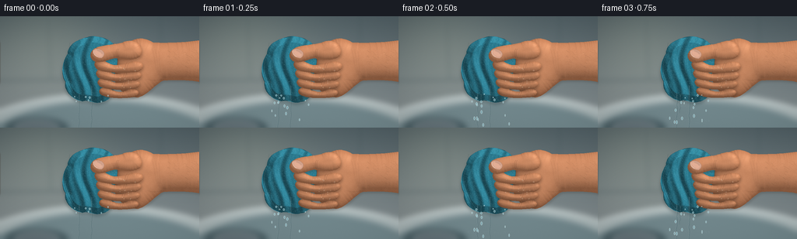

CODING AGENTS AS PIXEL WORLD MODELS
traex/GPT-6.1-Sol · phygen_015
点击播放 · 原生 RGB 像素
逐轮保存的候选
回放视频、检查图与代码变化。
每份候选均可单独播放。实际图片检查记录在下方工具轨迹中。
候选 01播放与检查图
点击播放 · 原生 RGB 像素


展开代码变化
--- 上一保存版本
+++ 本次保存版本
@@ -0,0 +1,347 @@
+from pathlib import Path
+import math
+import numpy as np
+from PIL import Image, ImageDraw, ImageFilter
+from scipy.ndimage import distance_transform_edt, gaussian_filter
+import artifact_io
+
+ROOT=Path(__file__).resolve().parent
+W,H,S=256,144,3
+WW,HH=W*S,H*S
+Y,X=np.mgrid[:HH,:WW].astype(float)/S
+rng=np.random.default_rng(1824)
+# Fixed textures are attached to the subject, not regenerated between frames.
+noise=gaussian_filter(rng.normal(size=(HH,WW)),.65)
+noise2=gaussian_filter(rng.normal(size=(HH,WW)),5)
+
+
+def bezier(p0,p1,p2,p3,n=22):
+ t=np.linspace(0,1,n)[:,None]
+ return (1-t)**3*np.array(p0)+3*(1-t)**2*t*np.array(p1)+3*(1-t)*t*t*np.array(p2)+t**3*np.array(p3)
+
+def path(start,segs):
+ pts=[start]
+ a=start
+ for b,c,d in segs:
+ pts.extend(bezier(a,b,c,d)[1:].tolist());a=d
+ return pts
+
+def mask_poly(pts):
+ im=Image.new('L',(WW,HH)); d=ImageDraw.Draw(im)
+ d.polygon([(int(x*S),int(y*S)) for x,y in pts],fill=255)
+ return np.asarray(im,dtype=float)/255
+
+def composite(canvas,color,alpha):
+ return canvas*(1-alpha[...,None])+color*alpha[...,None]
+
+def stroke(canvas,pts,fill,width,blur=0):
+ im=Image.new('RGBA',(WW,HH)); d=ImageDraw.Draw(im)
+ pp=[(int(x*S),int(y*S)) for x,y in pts]
+ d.line(pp,fill=fill,width=max(1,int(width*S)),joint='curve')
+ if blur: im=im.filter(ImageFilter.GaussianBlur(blur*S))
+ arr=np.asarray(im,dtype=float)
+ return composite(canvas,arr[:,:,:3],arr[:,:,3]/255)
+
+def shape(canvas,pts,color,opacity=1,blur=0):
+ m=mask_poly(pts)
+ if blur:m=gaussian_filter(m,blur*S)
+ return composite(canvas,np.array(color),m*opacity)
+
+def skin(canvas,pts,radius=9,light=1,shadow=0.9):
+ mask=mask_poly(pts)
+ # Soft contact shadows make the curled digits sit ON the fabric.
+ sh=gaussian_filter(mask,1.5*S)
+ sh=np.roll(np.roll(sh,2*S,axis=0),1*S,axis=1)
+ canvas=composite(canvas,np.array([48,32,23]),sh*.30*shadow)
+ d=distance_transform_edt(mask)/S
+ q=np.clip((radius-d)/radius,0,1)
+ z=np.sqrt(np.maximum(0,1-q*q))*radius
+ z=gaussian_filter(z,.42*S)
+ gy,gx=np.gradient(z,1/S,1/S)
+ den=np.sqrt(1+gx*gx+gy*gy)
+ diffuse=np.clip((-.42*gx+.54*gy+.72)/den,0,1)
+ # Top-left window lighting and warm skin subsurface at grazing angles.
+ val=.59+.43*diffuse+.045*np.maximum(0,(1/den))
+ c=np.array([205.,139.,100.])[None,None,:]*val[...,None]*light
+ c+=np.array([9,1,-3])[None,None,:]*(1-1/den)[...,None]
+ c+=noise[...,None]*2.3+noise2[...,None]*12
+ shine=np.maximum(0,(diffuse-.86)/.14)**3
+ c+=shine[...,None]*np.array([19,18,16])
+ return composite(canvas,np.clip(c,0,255),mask)
+
+# Defocused tiled wall and the inside of a porcelain wash basin.
+bg=np.zeros((HH,WW,3),float)
+base=np.clip(.15+Y/200,0,1)
+for k,(a,b) in enumerate([(69,151),(85,159),(91,160)]):bg[:,:,k]=a+(b-a)*base
+bg+=np.exp(-((X-55)/90)**2-((Y-38)/70)**2)[...,None]*np.array([25,23,16])
+# Tile joints, blurred enough to remain outside the plane of focus.
+bgim=Image.fromarray(np.uint8(bg)); bd=ImageDraw.Draw(bgim)
+bd.line([(0,83*S),(256*S,79*S)],fill=(93,108,111),width=2*S)
+bd.line([(62*S,0),(65*S,80*S)],fill=(96,110,111),width=S)
+bd.line([(207*S,0),(205*S,81*S)],fill=(73,90,95),width=S)
+# Curved sink lip and interior, including vague reflections.
+bd.ellipse((-56*S,100*S,317*S,244*S),fill=(171,184,185),outline=(214,223,222),width=3*S)
+bd.ellipse((-31*S,109*S,294*S,248*S),fill=(115,137,142),outline=(133,151,155),width=2*S)
+bd.ellipse((6*S,130*S,88*S,158*S),fill=(78,98,104))
+bd.ellipse((19*S,134*S,75*S,153*S),fill=(101,116,122),outline=(155,169,171),width=S)
+bgim=bgim.filter(ImageFilter.GaussianBlur(3.5*S))
+background=np.asarray(bgim,dtype=float)
+# Natural vignette; visual focus is on the squeezed towel and hand.
+vig=np.clip(1-.14*((X-143)/180)**2-.1*((Y-71)/106)**2,.76,1)
+background*=vig[...,None]
+
+# Fixed cloth loop locations in parametric textile coordinates.
+loops=np.random.default_rng(457).uniform(0,1,(9000,4))
+
+
+def cloth_outline(p):
+ cx=117-3*p; wide=34-12*p
+ top=27+4*p; bottom=111-7*p
+ pts=path((cx-5,top),[
+ ((cx+7,top-4),(cx+wide-6,top+3),(cx+wide-3,top+13)),
+ ((cx+wide+3,top+28),(cx+wide-1,70),(cx+wide-7,82)),
+ ((cx+wide-2,95),(cx+wide-7,bottom-2),(cx+13,bottom)),
+ ((cx+4,bottom+3),(cx-4,bottom-4),(cx-11,bottom-1)),
+ ((cx-23,bottom-3),(cx-wide-1,bottom-13),(cx-wide+1,bottom-26)),
+ ((cx-wide-6,73),(cx-wide-2,57),(cx-wide+4,49)),
+ ((cx-wide+4,37),(cx-19,31),(cx-5,top))])
+ return pts,cx,wide,top,bottom
+
+
+def cloth(canvas,p):
+ pts,cx,w,top,bottom=cloth_outline(p)
+ mask=mask_poly(pts)
+ cast=gaussian_filter(mask,2*S)
+ canvas=composite(canvas,np.array([30,48,51]),np.roll(cast,3*S,axis=0)*.36)
+ # Rounded folds gathered toward the pinched central neck.
+ xn=(X-cx)/w; yy=(Y-top)/(bottom-top)
+ edge=distance_transform_edt(mask)/S
+ z=np.minimum(edge,8)*.8
+ z+=4*np.sin(yy*np.pi)*np.exp(-(xn*.9)**2)
+ phase=10*xn+2.4*np.sin(yy*5)+p*yy*4
+ folds=(2.8+2*p)*np.sin(phase)+1.35*np.sin(phase*1.76+yy*3)
+ z+=folds*mask
+ # Very fine terrycloth relief, plus bigger ridges between bunched pleats.
+ z+=.15*np.sin((X-cx)*8)*np.sin((Y-top)*9)*mask
+ z=gaussian_filter(z,.28*S)
+ gy,gx=np.gradient(z,1/S,1/S)
+ norm=np.sqrt(1+gx*gx+gy*gy)
+ lighting=np.clip((-.50*gx+.55*gy+.68)/norm,0,1)
+ value=.56+.60*lighting
+ # Fabric is saturated, visibly darker in the damp compressed folds.
+ value-=.09*np.exp(-((Y-(69-3*p))/13)**2)*p
+ weave=(np.sin((X-cx)*11.3)*np.sin((Y-top)*12.9))*.8
+ colors=np.array([42.,119.,139.])[None,None,:]*value[...,None]
+ colors+=noise[...,None]*5.5+weave[...,None]+noise2[...,None]*11
+ colors+=np.maximum(lighting-.79,0)[...,None]*np.array([29,39,37])
+ canvas=composite(canvas,np.clip(colors,0,255),mask)
+ # Individual wet terry loops catch light, clipped to the fabric silhouette.
+ tex=Image.new('RGBA',(WW,HH)); d=ImageDraw.Draw(tex)
+ for a,b,c,e in loops:
+ xx=cx-w+2*w*a; y=top+(bottom-top)*b
+ ix=int(xx*S);iy=int(y*S)
+ if 0<=ix<WW and 0<=iy<HH and mask[iy,ix]>.5:
+ col=(132,186,192,int(15+38*c)) if e>.4 else (13,61,77,35)
+ rad=.2+.25*c
+ d.arc((int((xx-rad)*S),int((y-rad)*S),int((xx+rad)*S),int((y+rad*.9)*S)),10,240,fill=col,width=1)
+ ar=np.asarray(tex,dtype=float);canvas=composite(canvas,ar[:,:,:3],ar[:,:,3]/255*mask)
+ # Sewn edge curls along the left hem and at the soft lower hanging fold.
+ hem=bezier((cx-w+4,49),(cx-w-7,66),(cx-w+2,89),(cx-18,bottom-5),45)
+ canvas=stroke(canvas,hem,(22, seventy:=76,91,110),1.1)
+ canvas=stroke(canvas,[(x+1.2,y) for x,y in hem],(107,166,174,95),.6)
+ # Local curved seams and dark pleats, naturally following compression.
+ for j in range(5):
+ xx=cx-w+7+j*(2*w-14)/4
+ curve=bezier((xx,top+7),(xx-5,43),(cx-12+(j*4),66),(xx+2,bottom-9),50)
+ canvas=stroke(canvas,curve,(12,57,70,46+int(p*17)),.55,blur=.25)
+ return canvas,(cx,w,top,bottom)
+
+
+def nail(canvas,pts):
+ m=mask_poly(pts)
+ ed=distance_transform_edt(m)/S
+ shade=.90+.1*np.minimum(ed/3,1)
+ color=np.array([227.,174.,149.])*shade[...,None]+noise[...,None]*1.1
+ canvas=composite(canvas,color,m)
+ # Fine nail plate highlight and restrained cuticle outline.
+ canvas=stroke(canvas,pts+[pts[0]],(130,79,57,65),.45,blur=.15)
+ return canvas
+
+
+def water_ribbon(canvas,pts,width,strength):
+ # Transparent water refracts the backdrop, with dark and bright specular edges.
+ mimg=Image.new('L',(WW,HH)); d=ImageDraw.Draw(mimg)
+ d.line([(int(x*S),int(y*S)) for x,y in pts],fill=255,width=max(1,int(width*S)),joint='curve')
+ ma=np.asarray(mimg,dtype=float)/255
+ refr=np.roll(canvas,int(max(1,width*.7*S)),axis=1)*.78+np.array([22,31,34])
+ canvas=composite(canvas,refr,ma*strength)
+ canvas=stroke(canvas,[(x-width*.4,y) for x,y in pts],(221,241,241,int(133*strength)),max(.26,width*.22),blur=.12)
+ canvas=stroke(canvas,[(x+width*.32,y) for x,y in pts],(31,74,85,int(150*strength)),max(.3,width*.18),blur=.15)
+ return canvas
+
+
+def water(canvas,p,t,geom,foreground=False):
+ cx,w,top,bottom=geom
+ flow=.1+.90*p
+ # Primary falling streams become thicker and more numerous as pressure rises.
+ for j in range(8):
+ active=np.clip((flow-(j*.103))/.18,0,1)
+ if active<=0:continue
+ sx=cx-15+j*4.15+(1-p)*math.sin(j*3)*2
+ sy=bottom-6-abs(j-3)*1.7
+ if foreground:
+ if j not in (0,2,4): continue
+ sy=90+2*j-6*p; sx=cx+1+j*3.2
+ pts=[]
+ length=(H-sy+6)*min(1,active*2)
+ for k in range(45):
+ a=k/44; y=sy+a*length
+ x=sx+(j-3)*.45*a*a+(math.sin(a*19-t*18+j)+.4*math.sin(a*37-t*9))*a*(.55+1.2*flow)
+ pts.append((x,y))
+ canvas=water_ribbon(canvas,pts,(.55+flow*1.9)*(1-.07*j)*active,.7+.22*active)
+ # Small spurts from the compressed cloth boundaries, following ballistic arcs.
+ if not foreground:
+ for j in range(4):
+ a=np.clip((p-.30-j*.1)/.35,0,1)
+ if a<=0:continue
+ sx=cx-w+3;sy=76+j*5-p*3
+ pts=[]
+ for k in range(24):
+ age=k/23*.55*a
+ xx=sx-(19+11*j)*age
+ yy=sy-(7+j*4)*age+93*age*age
+ pts.append((xx,yy))
+ canvas=water_ribbon(canvas,pts,.4+a*.45,.65)
+ # Droplets are emitted over time and accelerated by gravity.
+ rr=np.random.default_rng(81 if not foreground else 82)
+ times=np.arange(-.3,t+.001,.034)
+ for birth in times:
+ bp=np.clip(birth/4.75,0,1)**1.6
+ for q in range(2):
+ random=rr.random(6)
+ age=t-birth
+ if age<0 or age>.8:continue
+ if random[0]>.16+.65*bp: continue
+ sxx=117-3*bp+(random[1]-.5)*(48-17*bp)
+ syy=100-8*bp+random[2]*6
+ vx=(random[3]-.5)*(22+70*bp)
+ vy=9+random[4]*23
+ xx=sxx+vx*age; yy=syy+vy*age+104*age*age
+ if yy<143:
+ rad=.40+random[5]*.9
+ ell=Image.new('RGBA',(WW,HH));d=ImageDraw.Draw(ell)
+ tail=min(4.5,age*5+bp*1.6)
+ d.ellipse((int((xx-rad)*S),int((yy-rad-tail)*S),int((xx+rad)*S),int((yy+rad)*S)),fill=(141,192,203,145),outline=(226,246,246,195),width=1)
+ ar=np.asarray(ell,dtype=float);canvas=composite(canvas,ar[:,:,:3],ar[:,:,3]/255)
+ # Soft little concentric ripples and bright impact splashes in the basin.
+ if not foreground:
+ splash=Image.new('RGBA',(WW,HH)); d=ImageDraw.Draw(splash)
+ for j in range(7):
+ xx=cx-24+j*8; yy=137+2*math.sin(j*2)
+ radius=3+((t*20+j*4)%14)
+ al=int(40*flow*(1-radius/23))
+ d.ellipse(((xx-radius)*S,(yy-radius*.2)*S,(xx+radius)*S,(yy+radius*.2)*S),outline=(214,240,241,al),width=1)
+ for j in range(int(5+25*flow)):
+ ph=t*10+j*7.323
+ xx=cx+math.sin(ph)*28
+ yy=135-abs(math.cos(ph*1.41))*9*flow
+ d.line([(xx*S,yy*S),((xx+.8*math.sin(j))*S,(yy+1.7)*S)],fill=(222,244,244,int(100*flow)),width=1)
+ ar=np.asarray(splash,dtype=float); canvas=composite(canvas,ar[:,:,:3],ar[:,:,3]/255)
+ return canvas
+
+
+def make_frame(i):
+ t=i/4;u=i/19;p=u**1.6
+ canvas=background.copy()
+ # Forearm and palm, slightly rotating inward with increasing effort.
+ dy=3*p
+ arm=path((256,31+dy),[
+ ((237,34+dy),(214,35),(197,34)),
+ ((185,27),(177,27),(164,34)),
+ ((153,39),(145,54),(146,71)),
+ ((145,89),(159,105),(177,105-3*p)),
+ ((190,102),(199,88),(210,83)),
+ ((229,82),(247,82+dy),(260,86+dy)),
+ ((262,66),(259,46),(256,31+dy))])
+ canvas=skin(canvas,arm,24,light=1.02,shadow=.6)
+ # Wrist hollow, tendons, and subtle skin tension.
+ for j in range(3):
+ pts=bezier((195+j*4,42+j*1.3),(201+j*3,57),(197+j*2,71),(208+j*2,79),30)
+ canvas=stroke(canvas,pts,(111,65,45,26),.8,blur=.6)
+ canvas=stroke(canvas,bezier((188,81),(199,85),(204,81),(211,82)),(134,82,59,38),.75,blur=.5)
+ # Forearm hair is fine and unobtrusive, locked to the moving skin.
+ rr=np.random.default_rng(909)
+ for j in range(46):
+ xx=rr.uniform(217,264); yy=rr.uniform(41,78)+dy*(xx-215)/45
+ canvas=stroke(canvas,bezier((xx,yy),(xx-1,yy-1),(xx-2,yy-2),(xx-3,yy-1.8),8),(77,54,39,34),.25,blur=.12)
+ canvas,geom=cloth(canvas,p)
+ canvas=water(canvas,p,t,geom,False)
+ # Four flexed fingers wrap around the wet cloth. Distal parts pull in faster.
+ # A common palm on the right connects them into a believable gripping hand.
+ for j in reversed(range(4)):
+ y=65+j*(10.5-1.6*p)
+ left=128+j*2.0-8*p
+ right=177-j*1.9-2*p
+ r=8.1-j*.6
+ finger=path((right-1,y-r*.65),[
+ ((right+9,y-r*.65),(right+9,y+r*.7),(right-1,y+r)),
+ ((right-10,y+r+1),(left+13,y+r+2),(left+4,y+r*.75)),
+ ((left-3,y+r*.45),(left-5,y-r*.5),(left+1,y-r*.9)),
+ ((left+8,y-r*1.3),(left+15,y-r*.15),(left+24,y-r*.1)),
+ ((left+34,y-r*.05),(right-8,y-r*.9),(right-1,y-r*.65))])
+ canvas=skin(canvas,finger,r,light=1-.025*j)
+ # Curved flexion creases at each knuckle; increasing indentation.
+ for k in range(2):
+ xx=right-12-k*2.6
+ crease=bezier((xx+1,y-r*.50),(xx-2,y-r*.12),(xx-1,y+r*.28),(xx-3,y+r*.62),22)
+ canvas=stroke(canvas,crease,(111,62,43,75+int(p*30)),.48,blur=.15)
+ canvas=stroke(canvas,[(x+.65,y-.05) for x,y in crease],(240,181,139,55),.32,blur=.1)
+ crease=bezier((left+3,y+2),(left+7,y+3.3),(left+9,y+3.5),(left+11,y+2.7),18)
+ canvas=stroke(canvas,crease,(124,74,50,65),.48,blur=.15)
+ # Slight compression blanching on the foremost knuckle ridge.
+ canvas=stroke(canvas,bezier((right-14,y-r*.45),(right-10,y-r*.9),(right-5,y-r*.45),(right-4,y),22),(252,198,154,30+int(25*p)),1.6,blur=.6)
+ # Thumb crosses diagonally over the upper fingers, tip pressing into the fabric.
+ tx=124-5*p;ty=47+9*p
+ thumb=path((181,41+2*p),[
+ ((178,31),(166,30),(157,34+3*p)),
+ ((147,37+6*p),(tx+7,ty-10),(tx,ty-6)),
+ ((tx-8,ty-2),(tx-9,ty+7),(tx-2,ty+11)),
+ ((tx+6,ty+15),(tx+15,ty+9),(tx+25,ty+7)),
+ ((167,59+4*p),(187,56+3*p),(181,41+2*p))])
+ canvas=skin(canvas,thumb,10.5,light=1.04)
+ # Thumbnail is foreshortened, with a short natural free edge.
+ nailpts=path((tx-2,ty-4),[
+ ((tx+1,ty-6),(tx+7,ty-5),(tx+10,ty-1)),
+ ((tx+12,ty+2),(tx+10,ty+6),(tx+7,ty+7)),
+ ((tx+2,ty+7),(tx-2,ty+4),(tx-3,ty+1)),
+ ((tx-4,ty-1),(tx-4,ty-3),(tx-2,ty-4))])
+ canvas=nail(canvas,nailpts)
+ canvas=stroke(canvas,bezier((tx-2.6,ty-2.5),(tx-4,ty),(tx-1,ty+4),(tx+2,ty+5)),(245,211,187,160),.7)
+ canvas=stroke(canvas,bezier((tx+2,ty-3.1),(tx+5,ty-2.3),(tx+7,ty-1),(tx+8,ty+1)),(252,211,192,102),.85,blur=.45)
+ for j in range(2):
+ crease=bezier((151+j*2-p*3,42+5*p),(148+j*2-p*3,46+6*p),(149+j*2-p*3,51+5*p),(151+j*2-p*3,54+5*p),23)
+ canvas=stroke(canvas,crease,(121,68,46,76),.5,blur=.2)
+ # Glints and droplets adhering to the skin around the contact points.
+ shine=Image.new('RGBA',(WW,HH));sd=ImageDraw.Draw(shine)
+ rr=np.random.default_rng(190)
+ for j in range(19):
+ xx=rr.uniform(135,174)-4*p; yy=rr.uniform(64,93)-4*p
+ rad=rr.uniform(.3,.75)
+ sd.ellipse(((xx-rad)*S,(yy-rad)*S,(xx+rad)*S,(yy+rad)*S),fill=(218,189,158,45),outline=(248,225,199,85),width=1)
+ ar=np.asarray(shine,dtype=float);canvas=composite(canvas,ar[:,:,:3],ar[:,:,3]/255)
+ # Water escaping between the lower finger and the bunched towel.
+ canvas=water(canvas,p,t,geom,True)
+ # Gentle fixed photographic grain and color response.
+ canvas+=noise[...,None]*.65
+ out=Image.fromarray(np.uint8(np.clip(canvas,0,255)))
+ return np.asarray(out.resize((W,H),Image.Resampling.LANCZOS))
+
+
+def main():
+ frames=[]
+ for i in range(20):
+ frames.append(make_frame(i))
+ print(f'frame {i+1}/20',flush=True)
+ artifact_io.save(np.stack(frames),ROOT)
+
+if __name__=='__main__':main()
候选 02播放与检查图
点击播放 · 原生 RGB 像素


展开代码变化
--- 上一保存版本
+++ 本次保存版本
@@ -95,8 +95,8 @@
def cloth_outline(p):
- cx=117-3*p; wide=34-12*p
- top=27+4*p; bottom=111-7*p
+ cx=117-3*p; wide=34-15*p
+ top=27+4*p; bottom=111-11*p
pts=path((cx-5,top),[
((cx+7,top-4),(cx+wide-6,top+3),(cx+wide-3,top+13)),
((cx+wide+3,top+28),(cx+wide-1,70),(cx+wide-7,82)),
@@ -119,7 +119,7 @@
z=np.minimum(edge,8)*.8
z+=4*np.sin(yy*np.pi)*np.exp(-(xn*.9)**2)
phase=10*xn+2.4*np.sin(yy*5)+p*yy*4
- folds=(2.8+2*p)*np.sin(phase)+1.35*np.sin(phase*1.76+yy*3)
+ folds=(2.0+2*p)*np.sin(phase)+1.1*np.sin(phase*1.76+yy*3)
z+=folds*mask
# Very fine terrycloth relief, plus bigger ridges between bunched pleats.
z+=.15*np.sin((X-cx)*8)*np.sin((Y-top)*9)*mask
@@ -147,7 +147,7 @@
ar=np.asarray(tex,dtype=float);canvas=composite(canvas,ar[:,:,:3],ar[:,:,3]/255*mask)
# Sewn edge curls along the left hem and at the soft lower hanging fold.
hem=bezier((cx-w+4,49),(cx-w-7,66),(cx-w+2,89),(cx-18,bottom-5),45)
- canvas=stroke(canvas,hem,(22, seventy:=76,91,110),1.1)
+ canvas=stroke(canvas,hem,(22,76,91,110),1.1)
canvas=stroke(canvas,[(x+1.2,y) for x,y in hem],(107,166,174,95),.6)
# Local curved seams and dark pleats, naturally following compression.
for j in range(5):
@@ -279,8 +279,8 @@
# Four flexed fingers wrap around the wet cloth. Distal parts pull in faster.
# A common palm on the right connects them into a believable gripping hand.
for j in reversed(range(4)):
- y=65+j*(10.5-1.6*p)
- left=128+j*2.0-8*p
+ y=64+4*p+j*(11.5-4*p)
+ left=124+j*2.0-18*p
right=177-j*1.9-2*p
r=8.1-j*.6
finger=path((right-1,y-r*.65),[
@@ -301,7 +301,7 @@
# Slight compression blanching on the foremost knuckle ridge.
canvas=stroke(canvas,bezier((right-14,y-r*.45),(right-10,y-r*.9),(right-5,y-r*.45),(right-4,y),22),(252,198,154,30+int(25*p)),1.6,blur=.6)
# Thumb crosses diagonally over the upper fingers, tip pressing into the fabric.
- tx=124-5*p;ty=47+9*p
+ tx=123-13*p;ty=47+14*p
thumb=path((181,41+2*p),[
((178,31),(166,30),(157,34+3*p)),
((147,37+6*p),(tx+7,ty-10),(tx,ty-6)),
可观测工具轨迹
实际执行的命令与返回图片。
命令 1exit 0
/bin/bash -lc "ls -la && cat prompt.txt && printf '\\n---RULES---\\n' && cat GENERATION_RULES.md && printf '\\n---SPEC---\\n' && cat task_spec.json"
命令 2exit 0
/bin/bash -lc "cat artifact_io.py && python - <<'PY' import importlib.util for m in ['numpy','PIL','scipy','skimage']: print(m, bool(importlib.util.find_spec(m))) PY"
命令 3exit 0
/bin/bash -lc "cat > generate.py <<'PY'
from pathlib import Path
import math
import numpy as np
from PIL import Image, ImageDraw, ImageFilter
from scipy.ndimage import distance_transform_edt, gaussian_filter
import artifact_io
ROOT=Path(__file__).resolve().parent
W,H,S=256,144,3
WW,HH=W*S,H*S
Y,X=np.mgrid[:HH,:WW].astype(float)/S
rng=np.random.default_rng(1824)
# Fixed textures are attached to the subject, not regenerated between frames.
noise=gaussian_filter(rng.normal(size=(HH,WW)),.65)
noise2=gaussian_filter(rng.normal(size=(HH,WW)),5)
def bezier(p0,p1,p2,p3,n=22):
t=np.linspace(0,1,n)[:,None]
return (1-t)**3*np.array(p0)+3*(1-t)**2*t*np.array(p1)+3*(1-t)*t*t*np.array(p2)+t**3*np.array(p3)
def path(start,segs):
pts=[start]
a=start
for b,c,d in segs:
pts.extend(bezier(a,b,c,d)[1:].tolist());a=d
return pts
def mask_poly(pts):
im=Image.new('L',(WW,HH)); d=ImageDraw.Draw(im)
d.polygon([(int(x*S),int(y*S)) for x,y in pts],fill=255)
return np.asarray(im,dtype=float)/255
def composite(canvas,color,alpha):
return canvas*(1-alpha[...,None])+color*alpha[...,None]
def stroke(canvas,pts,fill,width,blur=0):
im=Image.new('RGBA',(WW,HH)); d=ImageDraw.Draw(im)
pp=[(int(x*S),int(y*S)) for x,y in pts]
d.line(pp,fill=fill,width=max(1,int(width*S)),joint='curve')
if blur: im=im.filter(ImageFilter.GaussianBlur(blur*S))
arr=np.asarray(im,dtype=float)
return composite(canvas,arr[:,:,:3],arr[:,:,3]/255)
def shape(canvas,pts,color,opacity=1,blur=0):
m=mask_poly(pts)
if blur:m=gaussian_filter(m,blur*S)
return composite(canvas,np.array(color),m*opacity)
def skin(canvas,pts,radius=9,light=1,shadow=0.9):
mask=mask_poly(pts)
# Soft contact shadows make the curled digits sit ON the fabric.
sh=gaussian_filter(mask,1.5*S)
sh=np.roll(np.roll(sh,2*S,axis=0),1*S,axis=1)
canvas=composite(canvas,np.array([48,32,23]),sh*.30*shadow)
d=distance_transform_edt(mask)/S
q=np.clip((radius-d)/radius,0,1)
z=np.sqrt(np.maximum(0,1-q*q))*radius
z=gaussian_filter(z,.42*S)
gy,gx=np.gradient(z,1/S,1/S)
den=np.sqrt(1+gx*gx+gy*gy)
diffuse=np.clip((-.42*gx+.54*gy+.72)/den,0,1)
# Top-left window lighting and warm skin subsurface at grazing angles.
val=.59+.43*diffuse+.045*np.maximum(0,(1/den))
c=np.array([205.,139.,100.])[None,None,:]*val[...,None]*light
c+=np.array([9,1,-3])[None,None,:]*(1-1/den)[...,None]
c+=noise[...,None]*2.3+noise2[...,None]*12
shine=np.maximum(0,(diffuse-.86)/.14)**3
c+=shine[...,None]*np.array([19,18,16])
return composite(canvas,np.clip(c,0,255),mask)
# Defocused tiled wall and the inside of a porcelain wash basin.
bg=np.zeros((HH,WW,3),float)
base=np.clip(.15+Y/200,0,1)
for k,(a,b) in enumerate([(69,151),(85,159),(91,160)]):bg[:,:,k]=a+(b-a)*base
bg+=np.exp(-((X-55)/90)**2-((Y-38)/70)**2)[...,None]*np.array([25,23,16])
# Tile joints, blurred enough to remain outside the plane of focus.
bgim=Image.fromarray(np.uint8(bg)); bd=ImageDraw.Draw(bgim)
bd.line([(0,83*S),(256*S,79*S)],fill=(93,108,111),width=2*S)
bd.line([(62*S,0),(65*S,80*S)],fill=(96,110,111),width=S)
bd.line([(207*S,0),(205*S,81*S)],fill=(73,90,95),width=S)
# Curved sink lip and interior, including vague reflections.
bd.ellipse((-56*S,100*S,317*S,244*S),fill=(171,184,185),outline=(214,223,222),width=3*S)
bd.ellipse((-31*S,109*S,294*S,248*S),fill=(115,137,142),outline=(133,151,155),width=2*S)
bd.ellipse((6*S,130*S,88*S,158*S),fill=(78,98,104))
bd.ellipse((19*S,134*S,75*S,153*S),fill=(101,116,122),outline=(155,169,171),width=S)
bgim=bgim.filter(ImageFilter.GaussianBlur(3.5*S))
background=np.asarray(bgim,dtype=float)
# Natural vignette; visual focus is on the squeezed towel and hand.
vig=np.clip(1-.14*((X-143)/180)**2-.1*((Y-71)/106)**2,.76,1)
background*=vig[...,None]
# Fixed cloth loop locations in parametric textile coordinates.
loops=np.random.default_rng(457).uniform(0,1,(9000,4))
def cloth_outline(p):
cx=117-3*p; wide=34-12*p
top=27+4*p; bottom=111-7*p
pts=path((cx-5,top),[
((cx+7,top-4),(cx+wide-6,top+3),(cx+wide-3,top+13)),
((cx+wide+3,top+28),(cx+wide-1,70),(cx+wide-7,82)),
((cx+wide-2,95),(cx+wide-7,bottom-2),(cx+13,bottom)),
((cx+4,bottom+3),(cx-4,bottom-4),(cx-11,bottom-1)),
((cx-23,bottom-3),(cx-wide-1,bottom-13),(cx-wide+1,bottom-26)),
((cx-wide-6,73),(cx-wide-2,57),(cx-wide+4,49)),
((cx-wide+4,37),(cx-19,31),(cx-5,top))])
return pts,cx,wide,top,bottom
def cloth(canvas,p):
pts,cx,w,top,bottom=cloth_outline(p)
mask=mask_poly(pts)
cast=gaussian_filter(mask,2*S)
canvas=composite(canvas,np.array([30,48,51]),np.roll(cast,3*S,axis=0)*.36)
# Rounded folds gathered toward the pinched central neck.
xn=(X-cx)/w; yy=(Y-top)/(bottom-top)
edge=distance_transform_edt(mask)/S
z=np.minimum(edge,8)*.8
z+=4*np.sin(yy*np.pi)*np.exp(-(xn*.9)**2)
phase=10*xn+2.4*np.sin(yy*5)+p*yy*4
folds=(2.8+2*p)*np.sin(phase)+1.35*np.sin(phase*1.76+yy*3)
z+=folds*mask
# Very fine terrycloth relief, plus bigger ridges between bunched pleats.
z+=.15*np.sin((X-cx)*8)*np.sin((Y-top)*9)*mask
z=gaussian_filter(z,.28*S)
gy,gx=np.gradient(z,1/S,1/S)
norm=np.sqrt(1+gx*gx+gy*gy)
lighting=np.clip((-.50*gx+.55*gy+.68)/norm,0,1)
value=.56+.60*lighting
# Fabric is saturated, visibly darker in the damp compressed folds.
value-=.09*np.exp(-((Y-(69-3*p))/13)**2)*p
weave=(np.sin((X-cx)*11.3)*np.sin((Y-top)*12.9))*.8
colors=np.array([42.,119.,139.])[None,None,:]*value[...,None]
colors+=noise[...,None]*5.5+weave[...,None]+noise2[...,None]*11
colors+=np.maximum(lighting-.79,0)[...,None]*np.array([29,39,37])
canvas=composite(canvas,np.clip(colors,0,255),mask)
# Individual wet terry loops catch light, clipped to the fabric silhouette.
tex=Image.new('RGBA',(WW,HH)); d=ImageDraw.Draw(tex)
for a,b,c,e in loops:
xx=cx-w+2*w*a; y=top+(bottom-top)*b
ix=int(xx*S);iy=int(y*S)
if 0<=ix<WW and 0<=iy<HH and mask[iy,ix]>.5:
col=(132,186,192,int(15+38*c)) if e>.4 else (13,61,77,35)
rad=.2+.25*c
d.arc((int((xx-rad)*S),int((y-rad)*S),int((xx+rad)*S),int((y+rad*.9)*S)),10,240,fill=col,width=1)
ar=np.asarray(tex,dtype=float);canvas=composite(canvas,ar[:,:,:3],ar[:,:,3]/255*mask)
# Sewn edge curls along the left hem and at the soft lower hanging fold.
hem=bezier((cx-w+4,49),(cx-w-7,66),(cx-w+2,89),(cx-18,bottom-5),45)
canvas=stroke(canvas,hem,(22, seventy:=76,91,110),1.1)
canvas=stroke(canvas,[(x+1.2,y) for x,y in hem],(107,166,174,95),.6)
# Local curved seams and dark pleats, naturally following compression.
for j in range(5):
xx=cx-w+7+j*(2*w-14)/4
curve=bezier((xx,top+7),(xx-5,43),(cx-12+(j*4),66),(xx+2,bottom-9),50)
canvas=stroke(canvas,curve,(12,57,70,46+int(p*17)),.55,blur=.25)
return canvas,(cx,w,top,bottom)
def nail(canvas,pts):
m=mask_poly(pts)
ed=distance_transform_edt(m)/S
shade=.90+.1*np.minimum(ed/3,1)
color=np.array([227.,174.,149.])*shade[...,None]+noise[...,None]*1.1
canvas=composite(canvas,color,m)
# Fine nail plate highlight and restrained cuticle outline.
canvas=stroke(canvas,pts+[pts[0]],(130,79,57,65),.45,blur=.15)
return canvas
def water_ribbon(canvas,pts,width,strength):
# Transparent water refracts the backdrop, with dark and bright specular edges.
mimg=Image.new('L',(WW,HH)); d=ImageDraw.Draw(mimg)
d.line([(int(x*S),int(y*S)) for x,y in pts],fill=255,width=max(1,int(width*S)),joint='curve')
ma=np.asarray(mimg,dtype=float)/255
refr=np.roll(canvas,int(max(1,width*.7*S)),axis=1)*.78+np.array([22,31,34])
canvas=composite(canvas,refr,ma*strength)
canvas=stroke(canvas,[(x-width*.4,y) for x,y in pts],(221,241,241,int(133*strength)),max(.26,width*.22),blur=.12)
canvas=stroke(canvas,[(x+width*.32,y) for x,y in pts],(31,74,85,int(150*strength)),max(.3,width*.18),blur=.15)
return canvas
def water(canvas,p,t,geom,foreground=False):
cx,w,top,bottom=geom
flow=.1+.90*p
# Primary falling streams become thicker and more numerous as pressure rises.
for j in range(8):
active=np.clip((flow-(j*.103))/.18,0,1)
if active<=0:continue
sx=cx-15+j*4.15+(1-p)*math.sin(j*3)*2
sy=bottom-6-abs(j-3)*1.7
if foreground:
if j not in (0,2,4): continue
sy=90+2*j-6*p; sx=cx+1+j*3.2
pts=[]
length=(H-sy+6)*min(1,active*2)
for k in range(45):
a=k/44; y=sy+a*length
x=sx+(j-3)*.45*a*a+(math.sin(a*19-t*18+j)+.4*math.sin(a*37-t*9))*a*(.55+1.2*flow)
pts.append((x,y))
canvas=water_ribbon(canvas,pts,(.55+flow*1.9)*(1-.07*j)*active,.7+.22*active)
# Small spurts from the compressed cloth boundaries, following ballistic arcs.
if not foreground:
for j in range(4):
a=np.clip((p-.30-j*.1)/.35,0,1)
if a<=0:continue
sx=cx-w+3;sy=76+j*5-p*3
pts=[]
for k in range(24):
age=k/23*.55*a
xx=sx-(19+11*j)*age
yy=sy-(7+j*4)*age+93*age*age
pts.append((xx,yy))
canvas=water_ribbon(canvas,pts,.4+a*.45,.65)
# Droplets are emitted over time and accelerated by gravity.
rr=np.random.default_rng(81 if not foreground else 82)
times=np.arange(-.3,t+.001,.034)
for birth in times:
bp=np.clip(birth/4.75,0,1)**1.6
for q in range(2):
random=rr.random(6)
age=t-birth
if age<0 or age>.8:continue
if random[0]>.16+.65*bp: continue
sxx=117-3*bp+(random[1]-.5)*(48-17*bp)
syy=100-8*bp+random[2]*6
vx=(random[3]-.5)*(22+70*bp)
vy=9+random[4]*23
xx=sxx+vx*age; yy=syy+vy*age+104*age*age
if yy<143:
rad=.40+random[5]*.9
ell=Image.new('RGBA',(WW,HH));d=ImageDraw.Draw(ell)
tail=min(4.5,age*5+bp*1.6)
d.ellipse((int((xx-rad)*S),int((yy-rad-tail)*S),int((xx+rad)*S),int((yy+rad)*S)),fill=(141,192,203,145),outline=(226,246,246,195),width=1)
ar=np.asarray(ell,dtype=float);canvas=composite(canvas,ar[:,:,:3],ar[:,:,3]/255)
# Soft little concentric ripples and bright impact splashes in the basin.
if not foreground:
splash=Image.new('RGBA',(WW,HH)); d=ImageDraw.Draw(splash)
for j in range(7):
xx=cx-24+j*8; yy=137+2*math.sin(j*2)
radius=3+((t*20+j*4)%14)
al=int(40*flow*(1-radius/23))
d.ellipse(((xx-radius)*S,(yy-radius*.2)*S,(xx+radius)*S,(yy+radius*.2)*S),outline=(214,240,241,al),width=1)
for j in range(int(5+25*flow)):
ph=t*10+j*7.323
xx=cx+math.sin(ph)*28
yy=135-abs(math.cos(ph*1.41))*9*flow
d.line([(xx*S,yy*S),((xx+.8*math.sin(j))*S,(yy+1.7)*S)],fill=(222,244,244,int(100*flow)),width=1)
ar=np.asarray(splash,dtype=float); canvas=composite(canvas,ar[:,:,:3],ar[:,:,3]/255)
return canvas
def make_frame(i):
t=i/4;u=i/19;p=u**1.6
canvas=background.copy()
# Forearm and palm, slightly rotating inward with increasing effort.
dy=3*p
arm=path((256,31+dy),[
((237,34+dy),(214,35),(197,34)),
((185,27),(177,27),(164,34)),
((153,39),(145,54),(146,71)),
((145,89),(159,105),(177,105-3*p)),
((190,102),(199,88),(210,83)),
((229,82),(247,82+dy),(260,86+dy)),
((262,66),(259,46),(256,31+dy))])
canvas=skin(canvas,arm,24,light=1.02,shadow=.6)
# Wrist hollow, tendons, and subtle skin tension.
for j in range(3):
pts=bezier((195+j*4,42+j*1.3),(201+j*3,57),(197+j*2,71),(208+j*2,79),30)
canvas=stroke(canvas,pts,(111,65,45,26),.8,blur=.6)
canvas=stroke(canvas,bezier((188,81),(199,85),(204,81),(211,82)),(134,82,59,38),.75,blur=.5)
# Forearm hair is fine and unobtrusive, locked to the moving skin.
rr=np.random.default_rng(909)
for j in range(46):
xx=rr.uniform(217,264); yy=rr.uniform(41,78)+dy*(xx-215)/45
canvas=stroke(canvas,bezier((xx,yy),(xx-1,yy-1),(xx-2,yy-2),(xx-3,yy-1.8),8),(77,54,39,34),.25,blur=.12)
canvas,geom=cloth(canvas,p)
canvas=water(canvas,p,t,geom,False)
# Four flexed fingers wrap around the wet cloth. Distal parts pull in faster.
# A common palm on the right connects them into a believable gripping hand.
for j in reversed(range(4)):
y=65+j*(10.5-1.6*p)
left=128+j*2.0-8*p
right=177-j*1.9-2*p
r=8.1-j*.6
finger=path((right-1,y-r*.65),[
((right+9,y-r*.65),(right+9,y+r*.7),(right-1,y+r)),
((right-10,y+r+1),(left+13,y+r+2),(left+4,y+r*.75)),
((left-3,y+r*.45),(left-5,y-r*.5),(left+1,y-r*.9)),
((left+8,y-r*1.3),(left+15,y-r*.15),(left+24,y-r*.1)),
((left+34,y-r*.05),(right-8,y-r*.9),(right-1,y-r*.65))])
canvas=skin(canvas,finger,r,light=1-.025*j)
# Curved flexion creases at each knuckle; increasing indentation.
for k in range(2):
xx=right-12-k*2.6
crease=bezier((xx+1,y-r*.50),(xx-2,y-r*.12),(xx-1,y+r*.28),(xx-3,y+r*.62),22)
canvas=stroke(canvas,crease,(111,62,43,75+int(p*30)),.48,blur=.15)
canvas=stroke(canvas,[(x+.65,y-.05) for x,y in crease],(240,181,139,55),.32,blur=.1)
crease=bezier((left+3,y+2),(left+7,y+3.3),(left+9,y+3.5),(left+11,y+2.7),18)
canvas=stroke(canvas,crease,(124,74,50,65),.48,blur=.15)
# Slight compression blanching on the foremost knuckle ridge.
canvas=stroke(canvas,bezier((right-14,y-r*.45),(right-10,y-r*.9),(right-5,y-r*.45),(right-4,y),22),(252,198,154,30+int(25*p)),1.6,blur=.6)
# Thumb crosses diagonally over the upper fingers, tip pressing into the fabric.
tx=124-5*p;ty=47+9*p
thumb=path((181,41+2*p),[
((178,31),(166,30),(157,34+3*p)),
((147,37+6*p),(tx+7,ty-10),(tx,ty-6)),
((tx-8,ty-2),(tx-9,ty+7),(tx-2,ty+11)),
((tx+6,ty+15),(tx+15,ty+9),(tx+25,ty+7)),
((167,59+4*p),(187,56+3*p),(181,41+2*p))])
canvas=skin(canvas,thumb,10.5,light=1.04)
# Thumbnail is foreshortened, with a short natural free edge.
nailpts=path((tx-2,ty-4),[
((tx+1,ty-6),(tx+7,ty-5),(tx+10,ty-1)),
((tx+12,ty+2),(tx+10,ty+6),(tx+7,ty+7)),
((tx+2,ty+7),(tx-2,ty+4),(tx-3,ty+1)),
((tx-4,ty-1),(tx-4,ty-3),(tx-2,ty-4))])
canvas=nail(canvas,nailpts)
canvas=stroke(canvas,bezier((tx-2.6,ty-2.5),(tx-4,ty),(tx-1,ty+4),(tx+2,ty+5)),(245,211,187,160),.7)
canvas=stroke(canvas,bezier((tx+2,ty-3.1),(tx+5,ty-2.3),(tx+7,ty-1),(tx+8,ty+1)),(252,211,192,102),.85,blur=.45)
for j in range(2):
crease=bezier((151+j*2-p*3,42+5*p),(148+j*2-p*3,46+6*p),(149+j*2-p*3,51+5*p),(151+j*2-p*3,54+5*p),23)
canvas=stroke(canvas,crease,(121,68,46,76),.5,blur=.2)
# Glints and droplets adhering to the skin around the contact points.
shine=Image.new('RGBA',(WW,HH));sd=ImageDraw.Draw(shine)
rr=np.random.default_rng(190)
for j in range(19):
xx=rr.uniform(135,174)-4*p; yy=rr.uniform(64,93)-4*p
rad=rr.uniform(.3,.75)
sd.ellipse(((xx-rad)*S,(yy-rad)*S,(xx+rad)*S,(yy+rad)*S),fill=(218,189,158,45),outline=(248,225,199,85),width=1)
ar=np.asarray(shine,dtype=float);canvas=composite(canvas,ar[:,:,:3],ar[:,:,3]/255)
# Water escaping between the lower finger and the bunched towel.
canvas=water(canvas,p,t,geom,True)
# Gentle fixed photographic grain and color response.
canvas+=noise[...,None]*.65
out=Image.fromarray(np.uint8(np.clip(canvas,0,255)))
return np.asarray(out.resize((W,H),Image.Resampling.LANCZOS))
def main():
frames=[]
for i in range(20):
frames.append(make_frame(i))
print(f'frame {i+1}/20',flush=True)
artifact_io.save(np.stack(frames),ROOT)
if __name__=='__main__':main()
PY
python generate.py"命令 4exit 0
/bin/bash -lc 'command -v ffmpeg || true'
命令 5exit 0
/bin/bash -lc "python - <<'PY'
p='generate.py'
s=open(p).read().replace('wide=34-12*p','wide=34-15*p').replace('bottom=111-7*p','bottom=111-11*p').replace('(2.8+2*p)*np.sin(phase)+1.35*np.sin(phase*1.76+yy*3)','(2.0+2*p)*np.sin(phase)+1.1*np.sin(phase*1.76+yy*3)').replace('(22, seventy:=76,91,110)','(22,76,91,110)').replace('y=65+j*(10.5-1.6*p)','y=64+4*p+j*(11.5-4*p)').replace('left=128+j*2.0-8*p','left=124+j*2.0-18*p').replace('tx=124-5*p;ty=47+9*p','tx=123-13*p;ty=47+14*p')
open(p,'w').write(s)
PY
python generate.py"命令 6exit 0
/bin/bash -lc "python - <<'PY'
from pathlib import Path
import numpy as np
from PIL import Image
root=Path('.')
z=np.load(root/'pixels.npz')['pixels']
assert z.shape==(144,256,20)
assert len(list((root/'frames').glob('*.png')))==20
assert Image.open(root/'frames/19.png').mode=='RGB'
for n in ['generate.py','pixels.npz','index.html','inspection.png','transition_check.png']:
assert (root/n).is_file()
print(n, (root/n).stat().st_size)
PY"视觉工具实际返回图片 1

视觉工具实际返回图片 2

保存候选 2 份；完成命令 6 次；可验证图片返回 2 张。原始 API 响应与完整日志保留在本地。